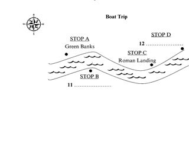
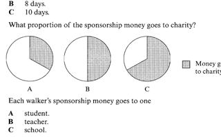
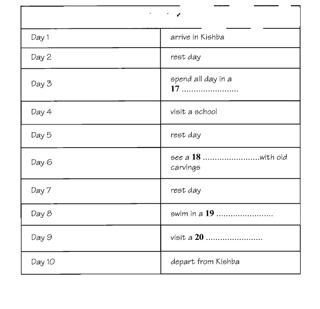
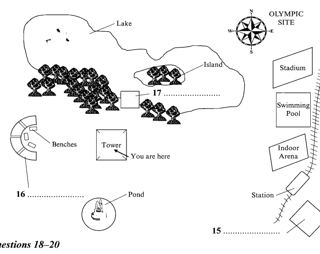
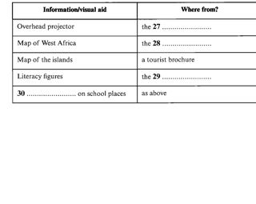
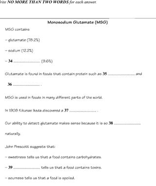

Listening visuals Cambridge 7Reviewed results: 122 confirmed issue records (86 duplicate pairs, 9 sequence inversions, 1 wrong-Part image, 26 clipped images); 23 suspected records. Counts overlap Parts/assets. Full reviewed CSV. Raw audit.json/findings.csv are detector output, not the final defect list. Fallback scope alone is not a defect. OCR ranges are incomplete hints.
All books · Cambridge 7: 16 Parts · exact current resolver outputCambridge 07 / Test 1 / Part 1
V0102:confirmed:duplicate_content; C016:confirmed:clipped_source
Q[1, 5]: 1, 2, 3 [Part fallback]
Q[6, 10]: 1, 2, 3
#1 OCR Q[] · 3435×2903
Test_1_Section_1_AIRPORT_SHUTTLE_FORM.png
assets/public/bb349f7051ff6e02656b82797260bd39dbb602e4f092d73282d576c5dc035e5c.png
asset-bb349f7051ff6e02656b82797260bd39dbb602e4f092d73282d576c5dc035e5c #2 OCR Q[[1, 10]] · 3232×4896
#2 OCR Q[[1, 10]] · 3232×4896
Test_1_Section_1_PDF_014.png
assets/public/25cdb5d102569063751ef3324607bc381475898ef52fc6f2f6ceec579e13c4b4.png
asset-25cdb5d102569063751ef3324607bc381475898ef52fc6f2f6ceec579e13c4b4 #3 OCR Q[[6, 10]] · 3616×5184
#3 OCR Q[[6, 10]] · 3616×5184
Test_1_Section_1_PDF_015.png
assets/public/717877a86b42c5d736524fdbde6cc9a14f6100235b5f7223f436d6987cade147.png
asset-717877a86b42c5d736524fdbde6cc9a14f6100235b5f7223f436d6987cade147 Cambridge 07 / Test 1 / Part 2
No confirmed/candidate defect detected; not a visual PASS
Q[11, 16]: 1, 2 [Part fallback]
Q[17, 20]: 1, 2 [Part fallback]
 #1 OCR Q[[11, 20], [11, 16]] · 2688×5184
#1 OCR Q[[11, 20], [11, 16]] · 2688×5184
Test_1_Section_2_PDF_016.png
assets/public/bac0213c0bb6a359e909d423f45ce463433a1b34e9217df21672d8b4e8499a99.png
asset-bac0213c0bb6a359e909d423f45ce463433a1b34e9217df21672d8b4e8499a99 #2 OCR Q[[17, 20], [17, 20]] · 3616×5216
#2 OCR Q[[17, 20], [17, 20]] · 3616×5216
Test_1_Section_2_PDF_017.png
assets/public/ee2fdfb52ef03fd107e91c1a1ebb0ef5d12f7fbf65f30b2472883e46afa046ff.png
asset-ee2fdfb52ef03fd107e91c1a1ebb0ef5d12f7fbf65f30b2472883e46afa046ffCambridge 07 / Test 1 / Part 3
No confirmed/candidate defect detected; not a visual PASS
Q[21, 23]: 1, 2 [Part fallback]
Q[24, 27]: 1, 2 [Part fallback]
Q[28, 30]: 1, 2 [Part fallback]
 #1 OCR Q[[21, 30], [21, 23]] · 3264×5216
#1 OCR Q[[21, 30], [21, 23]] · 3264×5216
Test_1_Section_3_PDF_018.png
assets/public/65bcf1e805dd85e509e597061c84d6d7806c991a839752aabfe26960a0765da2.png
asset-65bcf1e805dd85e509e597061c84d6d7806c991a839752aabfe26960a0765da2 #2 OCR Q[[24, 27], [28, 30]] · 3616×5184
#2 OCR Q[[24, 27], [28, 30]] · 3616×5184
Test_1_Section_3_PDF_019.png
assets/public/95e7a429e028c4c23222563fb7c2572f79bb1cb6682d443f04d3c769f9ad2045.png
asset-95e7a429e028c4c23222563fb7c2572f79bb1cb6682d443f04d3c769f9ad2045Cambridge 07 / Test 1 / Part 4
No confirmed/candidate defect detected; not a visual PASS
Q[31, 35]: 1, 2 [Part fallback]
Q[36, 40]: 1, 2 [Part fallback]
 #1 OCR Q[[31, 40], [31, 35]] · 3616×5184
#1 OCR Q[[31, 40], [31, 35]] · 3616×5184
Test_1_Section_4_PDF_020.png
assets/public/21a25aca1fd2ff920ca0a44f222fcd19fb9308c961aca9b3a5c60e1547e3965b.png
asset-21a25aca1fd2ff920ca0a44f222fcd19fb9308c961aca9b3a5c60e1547e3965b #2 OCR Q[[36, 40]] · 3648×5184
#2 OCR Q[[36, 40]] · 3648×5184
Test_1_Section_4_PDF_021.png
assets/public/367570d685129067d3bb2c8f66f1ac7cb85d00758a3c2ec2324cb29b3010fab8.png
asset-367570d685129067d3bb2c8f66f1ac7cb85d00758a3c2ec2324cb29b3010fab8Cambridge 07 / Test 2 / Part 1
V0111:confirmed:duplicate_content; C015:suspected:crop_edge_risk
Q[1, 10]: 1, 2
#1 OCR Q[] · 3471×3203
Test_2_Section_1_CAR_INSURANCE_FORM.png
assets/public/0363281b0812c8fcffb714cd47656fcc05290105aca5cfa98923425c40224603.png
asset-0363281b0812c8fcffb714cd47656fcc05290105aca5cfa98923425c40224603 #2 OCR Q[[1, 10]] · 3616×4928
#2 OCR Q[[1, 10]] · 3616×4928
Test_2_Section_1_PDF_037.png
assets/public/892dc7776bcbc3bcf8b44c140309e0831253ddab5a991b774c401fc26ed7ab49.png
asset-892dc7776bcbc3bcf8b44c140309e0831253ddab5a991b774c401fc26ed7ab49 Cambridge 07 / Test 2 / Part 2
V0112:confirmed:duplicate_content; C025:suspected:crop_edge_risk
Q[11, 12]: 1, 2, 3
Q[13, 18]: 1, 2, 3
Q[19, 20]: 1, 2, 3 [Part fallback]

#1 OCR Q[] · 2941×2333
Test_2_Section_2_BOAT_TRIP_MAP.png
assets/public/78b19ed53628e3414a1eda16989fc807ee2679af3f9cf2e7b3b37bb6b972f527.png
asset-78b19ed53628e3414a1eda16989fc807ee2679af3f9cf2e7b3b37bb6b972f527 #2 OCR Q[[11, 20]] · 3232×5184
#2 OCR Q[[11, 20]] · 3232×5184
Test_2_Section_2_PDF_038.png
assets/public/91461cc55d6b2e1625c02e4e508a0652df376011bb67c711b7059dd27f5f3e21.png
asset-91461cc55d6b2e1625c02e4e508a0652df376011bb67c711b7059dd27f5f3e21 #3 OCR Q[[13, 18]] · 3616×5184
#3 OCR Q[[13, 18]] · 3616×5184
Test_2_Section_2_PDF_039.png
assets/public/8c33e5754ef42eb9433c138157b7351310e340c08c17ddb86a77b1e90779276c.png
asset-8c33e5754ef42eb9433c138157b7351310e340c08c17ddb86a77b1e90779276cCambridge 07 / Test 2 / Part 3
No confirmed/candidate defect detected; not a visual PASS
Q[21, 26]: 1, 2 [Part fallback]
Q[27, 28]: 1, 2
Q[29, 30]: 1, 2 [Part fallback]
 #1 OCR Q[[21, 30], [21, 26]] · 3136×5184
#1 OCR Q[[21, 30], [21, 26]] · 3136×5184
Test_2_Section_3_PDF_040.png
assets/public/8a4e8d0131b41e1184e290d2fb0b687093a5c92f9935b58a0f4ca88348aaad11.png
asset-8a4e8d0131b41e1184e290d2fb0b687093a5c92f9935b58a0f4ca88348aaad11 #2 OCR Q[] · 3616×5184
#2 OCR Q[] · 3616×5184
Test_2_Section_3_PDF_041.png
assets/public/902c0f421290873f78fcef47a1daa8d2c7e4abbbf77587060e8163ba51885bbf.png
asset-902c0f421290873f78fcef47a1daa8d2c7e4abbbf77587060e8163ba51885bbfCambridge 07 / Test 2 / Part 4
No confirmed/candidate defect detected; not a visual PASS
Q[31, 35]: 1, 2 [Part fallback]
Q[36, 40]: 1, 2
 #1 OCR Q[[31, 40], [31, 35]] · 3328×5184
#1 OCR Q[[31, 40], [31, 35]] · 3328×5184
Test_2_Section_4_PDF_042.png
assets/public/3b52ae72f129e7789100cb84f3aded368da668488dd9fdb44e363cb9fd91d72d.png
asset-3b52ae72f129e7789100cb84f3aded368da668488dd9fdb44e363cb9fd91d72d #2 OCR Q[[36, 40]] · 3616×5184
#2 OCR Q[[36, 40]] · 3616×5184
Test_2_Section_4_PDF_043.png
assets/public/c9299a1252555da23575e7f583bb285c6a5a879278925b8d99464c09688a9cfa.png
asset-c9299a1252555da23575e7f583bb285c6a5a879278925b8d99464c09688a9cfaCambridge 07 / Test 3 / Part 1
V0117:confirmed:duplicate_content; C008:confirmed:clipped_source
Q[1, 2]: 1, 2, 3 [Part fallback]
Q[3, 5]: 1, 2, 3
Q[6, 10]: 1, 2, 3
 #1 OCR Q[[3, 5]] · 3648×4928
#1 OCR Q[[3, 5]] · 3648×4928
Test_3_Section_1_PDF_060.png
assets/public/00f25a609c603d5aad1aa1b54f89382635d7178afaccb7cc595350eea9fead8b.png
asset-00f25a609c603d5aad1aa1b54f89382635d7178afaccb7cc595350eea9fead8b #2 OCR Q[[6, 10]] · 3648×5184
#2 OCR Q[[6, 10]] · 3648×5184
Test_3_Section_1_PDF_061.png
assets/public/5b59329c7a11c0e140f1bca31a920b7c8e884ac5d12c72bdaa0c94dee3d59e74.png
asset-5b59329c7a11c0e140f1bca31a920b7c8e884ac5d12c72bdaa0c94dee3d59e74#3 OCR Q[] · 3393×2851
Test_3_Section_1_STUDENT_DETAILS_FORM.png
assets/public/b12b2c159811a045b01a76f3e402661516e6d7e9ff585e9a5cc07c7997ab4620.png
asset-b12b2c159811a045b01a76f3e402661516e6d7e9ff585e9a5cc07c7997ab4620Cambridge 07 / Test 3 / Part 2
No confirmed/candidate defect detected; not a visual PASS
Q[11, 16]: 1, 2, 3, 4 [Part fallback]
Q[17, 20]: 1, 2, 3, 4
 #1 OCR Q[[11, 20], [11, 16]] · 3008×5152
#1 OCR Q[[11, 20], [11, 16]] · 3008×5152
Test_3_Section_2_PDF_062.png
assets/public/6b15dcbeb6d7f4cb3f908718164519c472664817308a82afb60ddf56f46a9360.png
asset-6b15dcbeb6d7f4cb3f908718164519c472664817308a82afb60ddf56f46a9360 #2 OCR Q[[17, 20]] · 3616×5184
#2 OCR Q[[17, 20]] · 3616×5184
Test_3_Section_2_PDF_063.png
assets/public/f5ab4ba50efdeb3013bb5006b9bd1e61fffdcd2fb8cd74a2354fb39cfe2d20ff.png
asset-f5ab4ba50efdeb3013bb5006b9bd1e61fffdcd2fb8cd74a2354fb39cfe2d20ff
#3 OCR Q[] · 2737×1700
Test_3_Section_2_SPONSORSHIP_PIE_CHART.png
assets/public/86d7d90b8ee35870cdfd46167c9b8f2a1414c76eb8077c85ae41e0a97ae9126d.png
asset-86d7d90b8ee35870cdfd46167c9b8f2a1414c76eb8077c85ae41e0a97ae9126d
#4 OCR Q[] · 3327×3214
Test_3_Section_2_WALKING_HOLIDAY_ITINERARY.png
assets/public/573ebe6c2b717b13f9d695e12dbc4ea2be853e12347c24b2912ec86335d546c8.png
asset-573ebe6c2b717b13f9d695e12dbc4ea2be853e12347c24b2912ec86335d546c8Cambridge 07 / Test 3 / Part 3
V0120:confirmed:duplicate_content; C020:suspected:crop_edge_risk
Q[21, 22]: 1, 2, 3, 4 [Part fallback]
Q[23, 25]: 1, 2, 3, 4
Q[26, 30]: 1, 2, 3, 4 [Part fallback]
Cambridge 07 / Test 3 / Part 4
No confirmed/candidate defect detected; not a visual PASS
Q[31, 34]: 1, 2 [Part fallback]
Q[35, 40]: 1, 2 [Part fallback]
 #1 OCR Q[[31, 40], [31, 34]] · 3648×5216
#1 OCR Q[[31, 40], [31, 34]] · 3648×5216
Test_3_Section_4_PDF_067.png
assets/public/5edce90b3f20bec803002f4d98b38cc711a326826985bca0bb8b13307a3fcde9.png
asset-5edce90b3f20bec803002f4d98b38cc711a326826985bca0bb8b13307a3fcde9 #2 OCR Q[[35, 40]] · 3488×5184
#2 OCR Q[[35, 40]] · 3488×5184
Test_3_Section_4_PDF_068.png
assets/public/1a5d69427481125af0f55a588bd0e5fdcd3cd65685446f9591380b7399dbbeb7.png
asset-1a5d69427481125af0f55a588bd0e5fdcd3cd65685446f9591380b7399dbbeb7Cambridge 07 / Test 4 / Part 1
V0125:confirmed:duplicate_content; C014:confirmed:clipped_source
Q[1, 6]: 1, 2, 3
Q[7, 10]: 1, 2, 3 [Part fallback]
#1 OCR Q[] · 3471×3204
Test_4_Section_1_HOMESTAY_APPLICATION.png
assets/public/37bab8fdbaa800a16913c7272389c7f862a9ec962066c147faca1ed8731f1a38.png
asset-37bab8fdbaa800a16913c7272389c7f862a9ec962066c147faca1ed8731f1a38 #2 OCR Q[[1, 10], [1, 6]] · 3616×4928
#2 OCR Q[[1, 10], [1, 6]] · 3616×4928
Test_4_Section_1_PDF_085.png
assets/public/2d699765d75235aa6ec60a141a5011ed1349bffb7c57443faf06b55459a2f7ec.png
asset-2d699765d75235aa6ec60a141a5011ed1349bffb7c57443faf06b55459a2f7ec #3 OCR Q[[7, 10]] · 3040×5294
#3 OCR Q[[7, 10]] · 3040×5294
Test_4_Section_1_PDF_086.png
assets/public/d04971525e7b57b63c9016f73a2093406d57bcab0b46d22a08bba25a53bcf3ac.png
asset-d04971525e7b57b63c9016f73a2093406d57bcab0b46d22a08bba25a53bcf3ac Cambridge 07 / Test 4 / Part 2
V0127:confirmed:duplicate_content; C011:suspected:crop_edge_risk
Q[11, 14]: 1, 2, 3, 4 [Part fallback]
Q[15, 17]: 1, 2, 3, 4
Q[18, 20]: 1, 2, 3, 4
#1 OCR Q[] · 3471×1451
Test_4_Section_2_NATURE_RESERVE_TABLE.png
assets/public/b3da03f6f66de9a8f20fcfc8ca280257b5a53f0142153d00e2deffc6895d19cd.png
asset-b3da03f6f66de9a8f20fcfc8ca280257b5a53f0142153d00e2deffc6895d19cd
#2 OCR Q[] · 3327×2644
Test_4_Section_2_OLYMPIC_SITE_PLAN.png
assets/public/f6b3fa610ee86f405745a579cc7f905d073581cf46cd3bde11484f2f944e89d5.png
asset-f6b3fa610ee86f405745a579cc7f905d073581cf46cd3bde11484f2f944e89d5 #3 OCR Q[[11, 20], [11, 14]] · 3648×5216
#3 OCR Q[[11, 20], [11, 14]] · 3648×5216
Test_4_Section_2_PDF_087.png
assets/public/1e3088d31ccbbf6d1e3db2562165b23f1eb57526261836a3e6016b16442c6e62.png
asset-1e3088d31ccbbf6d1e3db2562165b23f1eb57526261836a3e6016b16442c6e62 #4 OCR Q[[15, 17], [18, 20]] · 3616×5184
#4 OCR Q[[15, 17], [18, 20]] · 3616×5184
Test_4_Section_2_PDF_088.png
assets/public/a7c67992a6b3326150d18cea0d9d508d4740d67ced286623e398bdb260d70a7b.png
asset-a7c67992a6b3326150d18cea0d9d508d4740d67ced286623e398bdb260d70a7b Cambridge 07 / Test 4 / Part 3
No confirmed/candidate defect detected; not a visual PASS
Q[21, 22]: 1, 2, 3 [Part fallback]
Q[23, 26]: 1, 2, 3 [Part fallback]
Q[27, 30]: 1, 2, 3
 #1 OCR Q[[21, 30], [23, 26], [23, 26]] · 3616×5184
#1 OCR Q[[21, 30], [23, 26], [23, 26]] · 3616×5184
Test_4_Section_3_PDF_089.png
assets/public/7b21f4f844067596457c5c5bb474a1e7b467b01ccfa645b9a81a41e5e2b78cc7.png
asset-7b21f4f844067596457c5c5bb474a1e7b467b01ccfa645b9a81a41e5e2b78cc7 #2 OCR Q[[27, 30]] · 3328×5184
#2 OCR Q[[27, 30]] · 3328×5184
Test_4_Section_3_PDF_090.png
assets/public/287610408dc88a1984212fb8e500eb2bc0da70f8a5723e5716b53c3002affbd0.png
asset-287610408dc88a1984212fb8e500eb2bc0da70f8a5723e5716b53c3002affbd0
#3 OCR Q[] · 3062×2436
Test_4_Section_3_VISUAL_AIDS_TABLE.png
assets/public/da77b9a97579c4fe934e285b313e1629e412feb98662d5d8ee22ed65dd33e5d3.png
asset-da77b9a97579c4fe934e285b313e1629e412feb98662d5d8ee22ed65dd33e5d3Cambridge 07 / Test 4 / Part 4
No confirmed/candidate defect detected; not a visual PASS
Q[31, 33]: 1, 2, 3 [Part fallback]
Q[34, 40]: 1, 2, 3 [Part fallback]

#1 OCR Q[] · 3435×4096
Test_4_Section_4_MSG_NOTES.png
assets/public/184def73a4ef7be12da22af39cbd5c04f9ddf8d750688ce47f0f997d2b0ada55.png
asset-184def73a4ef7be12da22af39cbd5c04f9ddf8d750688ce47f0f997d2b0ada55 #2 OCR Q[[31, 40], [31, 33]] · 3616×5216
#2 OCR Q[[31, 40], [31, 33]] · 3616×5216
Test_4_Section_4_PDF_091.png
assets/public/fcf217c0e72c8aa0b6f8ff0baf1514845e297395a71123fdfdd370b9de3da290.png
asset-fcf217c0e72c8aa0b6f8ff0baf1514845e297395a71123fdfdd370b9de3da290 #3 OCR Q[[34, 40]] · 3616×5184
#3 OCR Q[[34, 40]] · 3616×5184
Test_4_Section_4_PDF_092.png
assets/public/56cc904097a50cdc6107b0ede3bd6657fb1ba75c499a2a0a0ce71c8359fd573e.png
asset-56cc904097a50cdc6107b0ede3bd6657fb1ba75c499a2a0a0ce71c8359fd573e